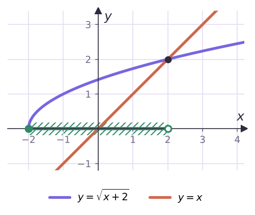

Теория
С уравнениями мы могли перейти к следствию и потом сделать проверку. С неравенствами так нельзя: решений обычно бесконечно много, все не проверишь. Поэтому иррациональные неравенства решают только равносильными переходами. Два неравенства равносильны, если множества их решений совпадают.
- Прибавление к обеим частям одного числа и умножение на положительное число дают равносильное неравенство (теоремы 16.1, 16.2);
- умножение на отрицательное число — тоже, если сменить знак неравенства (теорема 16.3);
- корень нечётной степени возрастает и определён везде: 3√f(x) < 3√g(x) ⇔ f(x) < g(x), 3√f(x) < g(x) ⇔ f(x) < (g(x))³.
С корнями чётной степени возникают две трудности: корень существует только при f(x) ≥ 0, и возводить в квадрат можно лишь неотрицательные части. Отсюда три основные теоремы.
√f(x) > √g(x) ⇔ { f(x) > g(x), g(x) ≥ 0 }.
Условие f(x) ≥ 0 писать не нужно: оно следует из f(x) > g(x) ≥ 0.
√f(x) < g(x) ⇔ { f(x) < (g(x))², g(x) > 0, f(x) ≥ 0 }.
Здесь нужны все три условия: корень должен существовать (f(x) ≥ 0), неотрицательный корень меньше g(x) только при g(x) > 0, а для неотрицательных чисел сравнение не меняется при возведении в квадрат.
√f(x) > g(x) ⇔ совокупности двух систем: { g(x) < 0, f(x) ≥ 0 } или { g(x) ≥ 0, f(x) > (g(x))² }.
Логика: если правая часть отрицательна, неравенство верно, как только корень существует (неотрицательное больше отрицательного). Если правая часть неотрицательна — возводим в квадрат.
Разбор примеров
Реши неравенство √(x² − 4x) > √(x − 4).
По теореме 16.4: x² − 4x > x − 4 и x − 4 ≥ 0. Первое: x² − 5x + 4 > 0, x < 1 или x > 4. Со вторым (x ≥ 4): (4; +∞).
Реши неравенство √(x + 2) < x.
Система по теореме 16.5: x + 2 < x², x > 0, x + 2 ≥ 0. Первое: x² − x − 2 > 0, x < −1 или x > 2. С условием x > 0 получаем (2; +∞).
Реши неравенство √(x + 2) > x.
По теореме 16.6 — совокупность:
- x < 0 и x + 2 ≥ 0: [−2; 0);
- x ≥ 0 и x + 2 > x²: −1 < x < 2, с x ≥ 0 — [0; 2).
Объединяем: [−2; 2). На графике это те x, где кривая y = √(x + 2) лежит выше прямой y = x.

Сравни с примером 2: вместе с точкой x = 2 (где √4 = 2) ответы покрывают всю область определения [−2; +∞).
В теореме 16.6 часто теряют первую систему — случай g(x) < 0. В примере 3 без неё пропал бы целый промежуток [−2; 0).
Реши неравенство √(x² − x − 6) ≥ x − 2.
Корень существует при (x − 3)(x + 2) ≥ 0: x ≤ −2 или x ≥ 3.
- x − 2 < 0 (то есть x < 2) и корень существует: x ≤ −2;
- x ≥ 2: возводим в квадрат: x² − x − 6 ≥ x² − 4x + 4, 3x ≥ 10, x ≥ 10/3.
Ответ: (−∞; −2] ∪ [10/3; +∞).
Реши неравенство (x − 4)√(x + 1) ≤ 0.
Область определения: x ≥ −1. В точке x = −1 корень равен 0 — неравенство верно. При x > −1 корень положителен, на него можно разделить: x − 4 ≤ 0. Ответ: [−1; 4].
В неравенствах вида (…)√f(x) ≥ 0 или ≤ 0 нули корня (где f(x) = 0) входят в ответ всегда — даже если другой множитель там «неправильного» знака. Например, (x − 5)√(x + 1) ≥ 0: ответ {−1} ∪ [5; +∞), и изолированную точку −1 легко потерять.
Реши неравенство 3√(x² − 1) < 3√(x + 5).
Кубический корень возрастает на всей прямой: x² − 1 < x + 5, x² − x − 6 < 0, (−2; 3). Никаких дополнительных условий.
Задачи урока
Реши в тетради. Ответы разберём на занятии.
Из учебника
- № 16.1 — Корень больше корня; корень меньше выражения.
- № 16.3 — Неравенства вида √f(x) < g(x).
- № 16.5 — Неравенства вида √f(x) > g(x).
- № 16.7 — Произведение с корнем.
Тест к уроку
Домашнее задание
№ 16.2, 16.4, 16.6, 16.8 из учебника письменно. Перед каждым решением записать, по какой теореме (16.4, 16.5 или 16.6) делается переход.